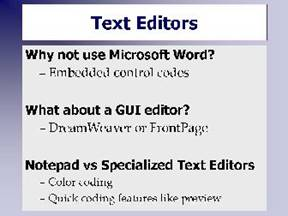
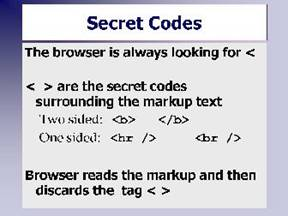

Which Editor to Use?
Why you don't want to use Microsoft Word
If you are familiar with Microsoft Word or some other word processor you will probably want to use it.

[D]The problem is a word processor like Word formats a document by inserting hundreds of hidden layout codes in the file. When you view the file in Word, everything looks wonderful, but if you display that file in a browser all you see is a bunch of gibberish with your text mixed in here and there. Going back to standards, Word is using a proprietary format for its text layout. This format will only work in Word or Word compatible programs such as Open Office. It won't work in a browser.What about DreamWeaver?
These are GUI (Graphic User Interface) editors. Keep in mind that this class is designed to teach you HTML markup. Using a GUI editor will be like going to driving school and having the instructor do all the driving for you.
The best way to learn HTML is to type the code yourself.
Then, in the future you will be able to utilize all of the features that come with an editor like DreamWeaver because you will understand the code that it is creating.
DreamWeaver allows you to look at both the GUI view as well as the code at the same time. You will want to spend most of your time in the code view where you have more control on things.
Text Editors
DreamWeaver is expensive. Many programmers prefer to use a regular text editor. One favorite is NotePad++. It will run from a flash drive (so you can take it with you) and it is free.
If you are running an Apple computer you can use TextWrangler. It is also free.
Try a Google search for: "html editor" open source

[D]What about NotePad? Using NotePad is okay, but it doesn't have the color coding or other nice features. The color coding is invaluable helping you figure out errors in your code. For example, if you forget to closing comment tag, in TextPad all your code will be green. You'll know immediately that something is wrong. With NotePad you won't have a clue. Programming with NotePad is like programming with your eyes shut.